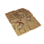
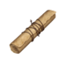

| HOME | ||
|---|---|---|
| ABOUT |  | This site is a collection of facts and theories surrounding the Pathologic series |
| STORY |  | Learn about the three campaigns in the story of Pathologic |
| CHARACTERS | Learn about the various characters inhabiting the Town-on-Gorkon | |
| ITEMS | Find out what all the items do and what they may mean | |